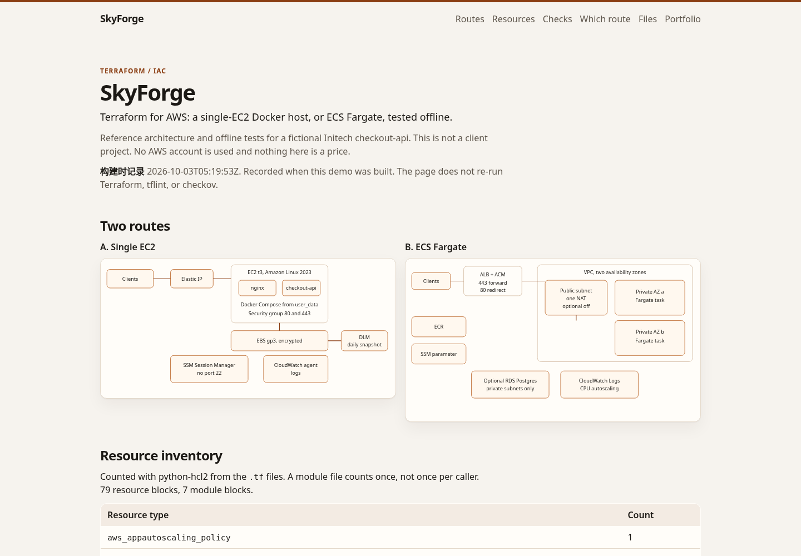
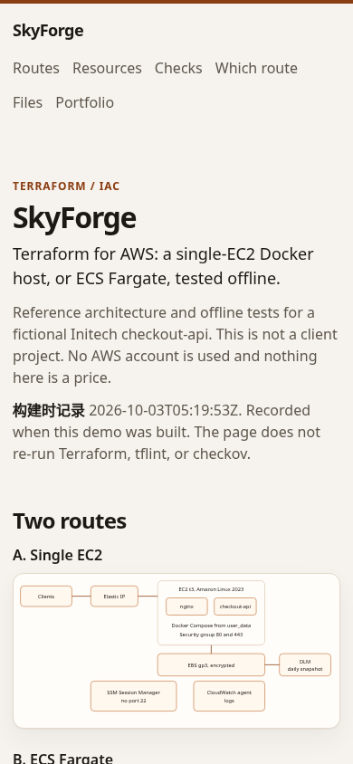

SkyForge
Terraform for AWS: a single-EC2 Docker host, or ECS Fargate, tested offline.
This is a reference architecture and an offline test for a fictional Initech checkout-api. It is not a client project. No AWS account is used, terraform apply is not run, and nothing on this page is a price.
The live demo reads data/checks.json. That file is written by scripts/record_checks.py from the tools on the build machine. The page labels it 构建时记录 (recorded at build time) and does not re-run Terraform when someone opens it.
The build recorded at 2026-10-03T05:19:53Z used Terraform v1.9.8, TFLint 0.55.1, and checkov 3.2.449, with AWS_ACCESS_KEY_ID empty. terraform fmt -check, terraform validate (both routes and the state bootstrap), and tflint passed. terraform test passed 6 runs. checkov reported 218 passed, 14 failed, and 2 skipped. The 14 failures are LOW. The two skipped checks are HIGH (CKV_AWS_355, CKV_AWS_290) on the Session Manager statement, because ssmmessages, ec2messages, and ssm:UpdateInstanceInformation do not support a resource ARN. The same reasons are in data/checks.json.
Two routes
Both routes share infra/modules/ and infra/envs/dev.tfvars / infra/envs/prod.tfvars. Provider and module versions are pinned. Resources carry Project, Env, and Owner. AMI and account ids come from data sources or variables.
Single EC2. One Amazon Linux 2023 host (t3.small in the dev file, t3.medium in prod). user_data installs Docker and Compose and starts the app behind nginx. The security group opens 80 and 443. Administration is SSM Session Manager, so port 22 stays closed. An Elastic IP, the CloudWatch agent, and a daily DLM snapshot of the encrypted EBS volume are included.
ECS Fargate. A VPC across two availability zones, with public and private subnets and one NAT gateway that can be turned off. When NAT is off, interface endpoints cover ECR, logs, and Session Manager, and an S3 gateway endpoint stays. An ALB terminates 443 with an ACM certificate passed in as a variable and redirects 80. ECR stores the image. The Fargate service scales on CPU. Logs go to CloudWatch. The app secret is an SSM SecureString. RDS Postgres is optional and off in the example files.
infra/bootstrap/ is a separate root for the state bucket (encrypted, public access blocked) and the DynamoDB lock. The offline checks keep a local backend. infra/backend.hcl.example shows the later switch. infra/RUNBOOK.md is the from-zero plan, rollback, resize, certificate change, logs, and terraform destroy. It names the AWS charge items for each route and does not estimate a bill.
infra/docker/Dockerfile is a multi-stage build. The process is not root and has a healthcheck. infra/scripts/push_ecr.sh is the push script. The demo does not run it.
infra/.github/workflows/terraform.yml runs fmt, validate, tflint, checkov, and terraform test. Plan runs only on workflow_dispatch, after GitHub OIDC assumes a deploy role. The workflow file is not executed from this repository, and it does not apply.
What the page shows
- One SVG diagram per route.
- A resource table parsed with python-hcl2 from the
.tffiles: module calls, resource types, and counts. A module file is counted once, not once per caller. - Check cards: pass or fail, durations, and the
terraform testrun list. The numbers matchdata/checks.json. - A read-only file browser for the Terraform, tests, and workflow under
infra/. There is no button that runs Terraform. - A comparison of the single host and Fargate on complexity, availability, and operations. Sizes are read from the tfvars files. No amounts.
Run
The process listens on 127.0.0.1:18807. Open http://127.0.0.1:18807/. The public URL is https://3.1.79.63/portfolio/skyforge/. Links are relative, so the same page works at the process root and under that prefix.
curl -fsS http://127.0.0.1:18807/healthzdeploy/skyforge.service is the systemd unit (MemoryMax=150M, DATA_DIR=/opt/portfolio/skyforge/data). pytest covers the health check, the match against data/checks.json, the parsed inventory, the dev/prod size split, path traversal, and the absence of any apply route.

